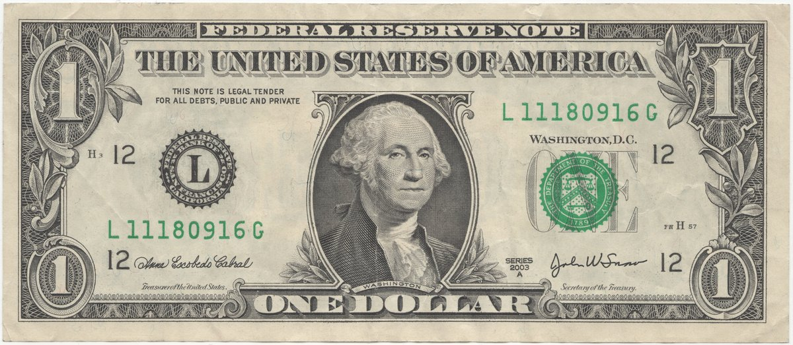
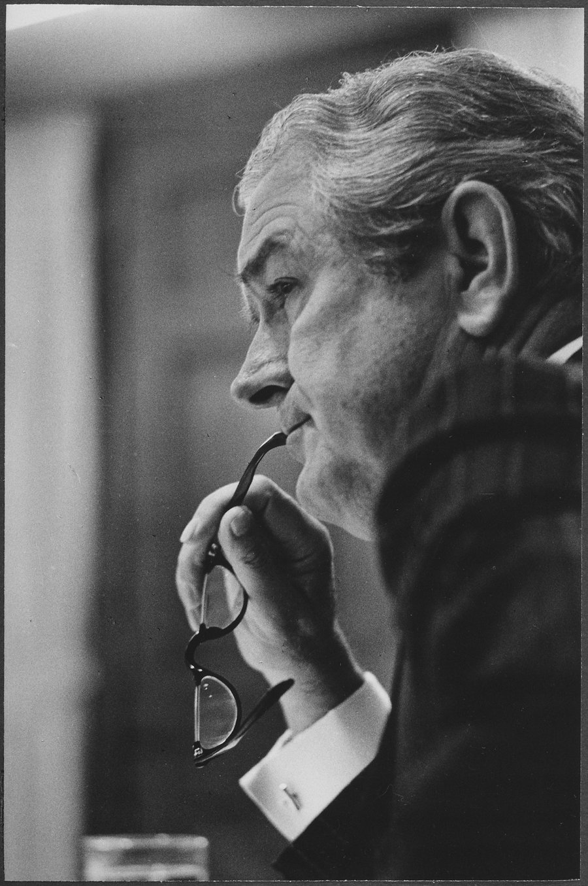
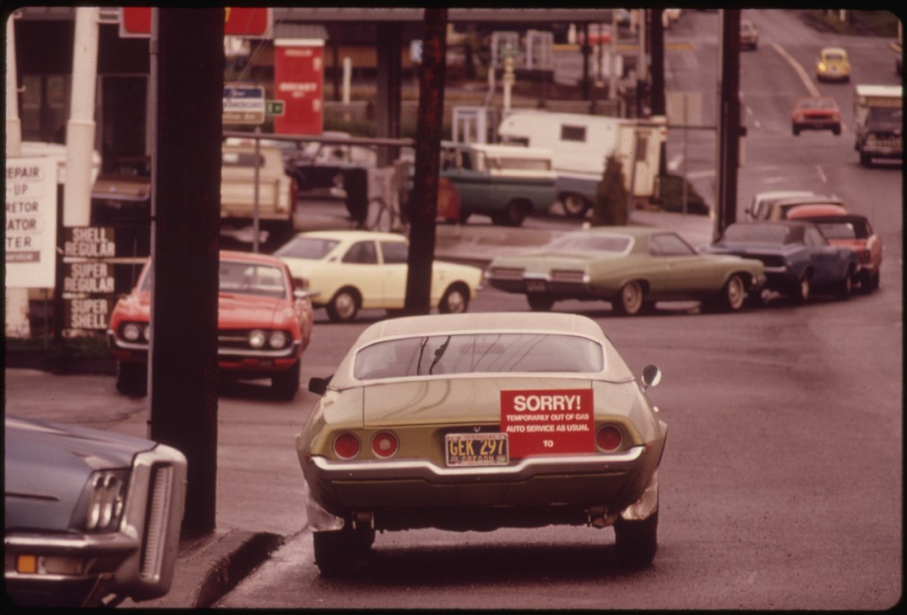
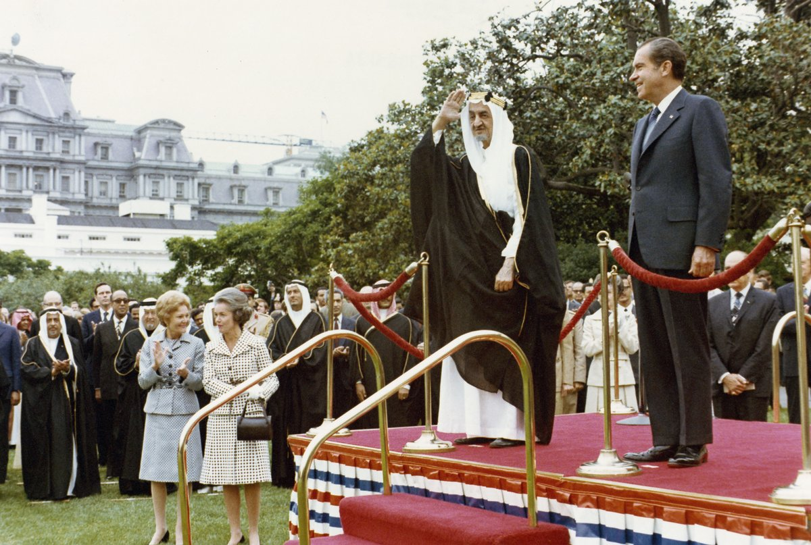
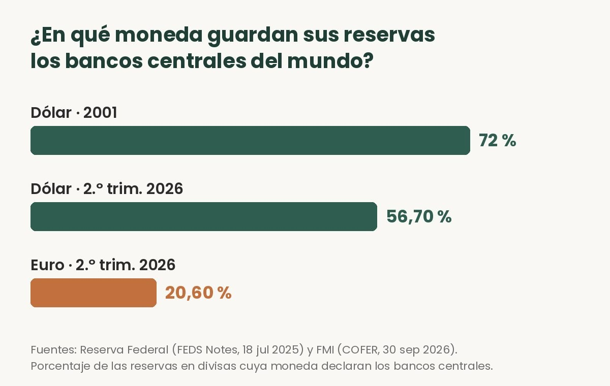
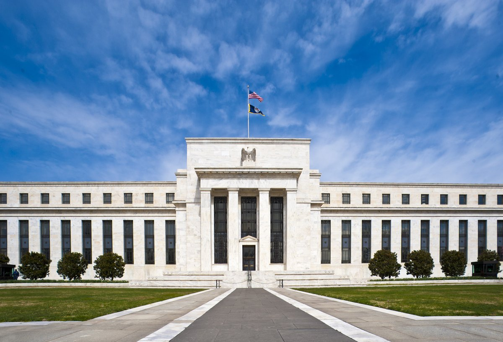

Imagina que guardas tus ahorros en una caja fuerte que no puedes abrir. No sabes qué hay dentro. Nadie lo sabe. Y aun así, cada vez que hay un susto en el mundo, la gente corre a guardar más dinero en esa misma caja. Esa caja existe. Se llama dólar.
En «Adiós al oro» vimos cómo se apagó la promesa de cambiar el billete por oro. Hoy empezamos justo donde lo dejamos.
1944: todas las monedas, atadas al dólar
El dólar empezó a ganar peso tras la Primera Guerra Mundial. En julio de 1944, en Bretton Woods (Estados Unidos), delegados de 44 países diseñaron un sistema nuevo: las monedas quedaban atadas al dólar, y el dólar al oro, a 35 dólares la onza.
Desde entonces, el dólar fue el centro de todo.
1965: «un privilegio exorbitante»

En febrero de 1965, el ministro de Finanzas francés, Valéry Giscard d'Estaing, puso nombre a lo que molestaba en Europa. El país cuya moneda guardan los demás disfruta de un «privilegio exorbitante»: si gasta más de lo que ingresa con el exterior, no tiene que apretarse el cinturón como el resto.
Es como pagar el supermercado con pagarés firmados por ti, y que el supermercado los guarde encantado porque todo el mundo los acepta.
1971: se cierra la ventanilla del oro
El 15 de agosto de 1971, el presidente Richard Nixon suspendió la convertibilidad del dólar en oro. Desde ese día, detrás del dólar no hay ningún lingote que reclamar (la muerte del patrón oro).

Lo lógico habría sido que el mundo dejara de fiarse. Pasó lo contrario. A finales de ese año, en una reunión del G-10, al secretario del Tesoro, John Connally, se le atribuye la frase que lo resume todo: «El dólar es nuestra moneda, pero vuestro problema».
Ojo: no hemos encontrado el acta que la recoja palabra por palabra, y circula en versiones algo distintas.
1974: petróleo a cambio de bonos

En 1973, el embargo de los países árabes de la OPEP cuadruplicó el precio del petróleo. Los productores se llenaron de dólares.
En julio de 1974, el nuevo secretario del Tesoro, William Simon, viajó a Yeda, en Arabia Saudí. Según contó Bloomberg en 2016, el trato era sencillo: Estados Unidos compraba petróleo saudí y daba al reino ayuda y equipo militar; Arabia Saudí invertía buena parte de sus ingresos en bonos del Tesoro estadounidense.

El rey Faisal puso una condición: que fuera «estrictamente secreto». El Tesoro le dejó comprar bonos por una puerta lateral, fuera de las subastas normales, y durante 41 años escondió sus compras bajo la etiqueta «exportadores de petróleo». Se supo en 2016.
Los dólares del petróleo volvían así a Estados Unidos, convertidos en préstamos.
La bóveda, hoy

- Reservas: según el FMI, en el segundo trimestre de 2026 el dólar era el 56,70 % de las reservas en divisas de los bancos centrales (las que declaran en qué moneda las tienen). En 2001 llegó al 72 %. El euro, segundo, está en el 20,60 %.
- Divisas: en abril de 2025, el dólar estaba en uno de los dos lados del 89 % de todas las operaciones de cambio de moneda del mundo (Banco de Pagos Internacionales).
- Billetes: la Reserva Federal calcula que a principios de 2025 había más de un billón de dólares en billetes fuera de Estados Unidos, más o menos la mitad de todos los que circulan.
Cuando hay miedo, todos corren al dólar

En las crisis, todos quieren dólares a la vez. En 2008-2009, la Reserva Federal prestó dólares a otros bancos centrales hasta llegar a 585.000 millones. En la pandemia de 2020, hasta 450.000 millones.
La bóveda que nadie puede abrir
En 1672, cuando los mercaderes se agolparon ante el Banco de Ámsterdam, el banco abrió su cámara y enseñó las monedas. Con el dólar eso ya no se puede hacer: desde 1971 no hay cámara que abrir.
Lo que lo sostiene es otra cosa. Según la Reserva Federal, el tamaño de la economía estadounidense, unos mercados financieros enormes y la confianza en sus instituciones. Y algo más sencillo: como dijo el economista Eswar Prasad en una conferencia de la Fed en junio de 2026, no hay alternativas creíbles.
Ya no confiamos en el dólar porque haya oro detrás. Confiamos porque todos los demás confían.
¿Y mañana?
En 1337, los banqueros Bardi y Peruzzi prestaron a un rey y aprendieron que, cuando el que debe es el que manda, el que presta solo puede esperar. Hoy, el país que emite la moneda del mundo tiene más de 28 billones de dólares en bonos del Tesoro en circulación, según la Fed.
Si un día el resto del mundo decide mirar dentro de la bóveda… ¿qué crees que encontraría?
Esta historia forma parte de la serie «La historia del dinero». Para ampliar: en «Prestar a los dos bandos» contamos cómo, en 1337, dos bancos de Florencia confiaron en la palabra de un rey; en «La mancha invisible», qué pasó en el Banco de Ámsterdam cuando el libro prometió más de lo que había en la cámara; y en «Del metal al papel», cómo nació el billete entre 1600 y 1800.
Fuentes
- Ascenso del dólar tras la Primera Guerra Mundial y consolidación tras 1944; 72 % de las reservas en 2001; más de un billón de dólares en billetes en manos extranjeras en el primer trimestre de 2025 (alrededor de la mitad del total); líneas de intercambio de la Reserva Federal (585.000 millones en 2008-2009 y 450.000 millones en 2020); más de 28 billones de dólares en bonos del Tesoro en circulación: Carol Bertaut, Bastian von Beschwitz y Stephanie Curcuru, «The International Role of the U.S. Dollar – 2025 Edition», FEDS Notes, Reserva Federal, 18 de julio de 2025. https://www.federalreserve.gov/econres/notes/feds-notes/the-international-role-of-the-u-s-dollar-2025-edition-20250718.html
- Bretton Woods, julio de 1944, 44 países, monedas fijadas al dólar y dólar a 35 dólares la onza: Federal Reserve History, «Creation of the Bretton Woods System». https://www.federalreservehistory.org/essays/bretton-woods-created
- 15 de agosto de 1971, suspensión de la convertibilidad del dólar en oro: Oficina del Historiador del Departamento de Estado, «Nixon and the End of the Bretton Woods System, 1971–1973». https://history.state.gov/milestones/1969-1976/nixon-shock
- Giscard d'Estaing, «privilegio exorbitante», 16 de febrero de 1965 (en caso de déficit, Estados Unidos no tiene que tomar medidas restrictivas): Pierre-Olivier Gourinchas, Hélène Rey y Maxime Sauzet, «The International Monetary and Financial System», 2019, p. 1 y nota 2. https://www.helenerey.eu/Content/_Documents/GRS_ARE_v17_WP_version.pdf
- Frase atribuida a John Connally en una reunión del G-10 a finales de 1971: Emmanuel Mourlon-Druol, «The international use of the euro: What can we learn from past examples of currency internationalisation?», Bruegel, 15 de octubre de 2018. https://www.bruegel.org/blog-post/international-use-euro-what-can-we-learn-past-examples-currency-internationalisation · Palabras de Muhammad bin Ibrahim, gobernador del Banco Central de Malasia, 31 de mayo de 2017, publicadas por el Banco de Pagos Internacionales. https://www.bis.org/speeches/20170627-dollar-renminbi-and-evolution-international-monetary-system
- Embargo y cuadruplicación del precio del petróleo, viaje de William Simon a Yeda en julio de 1974, acuerdo de petróleo y ayuda militar a cambio de inversión en bonos del Tesoro, condición de secreto del rey Faisal, compras fuera de subasta, 41 años bajo la etiqueta «exportadores de petróleo» y revelación en 2016: Andrea Wong (Bloomberg), «The untold story behind Saudi Arabia's 41-year secret debt», reproducido en The Independent, 1 de junio de 2016. https://www.independent.co.uk/news/business/news/the-untold-story-behind-saudi-arabia-s-41year-us-debt-secret-a7059041.html
- Reservas mundiales en el segundo trimestre de 2026 (dólar 56,70 %, euro 20,60 %): Fondo Monetario Internacional, COFER, «World Official Foreign Currency Reserves Increased Slightly in the Second Quarter of 2026», 30 de septiembre de 2026. https://data.imf.org/en/news/imf%20data%20brief%20september%2030
- El dólar en el 89 % de las operaciones de divisas en abril de 2025: Banco de Pagos Internacionales, Encuesta Trienal de 2025, nota de prensa del 30 de septiembre de 2025. https://www.bis.org/media-releases/20250930-global-fx-trading-hits-96-trillion-day-april-2025-and-otc-interest-rate-derivatives-surge-79
- Factores que sostienen hoy el papel del dólar (tamaño de la economía, mercados profundos y líquidos, confianza en las instituciones) y ausencia de alternativas creíbles según Eswar Prasad (conferencia del 22 y 23 de junio de 2026): Reserva Federal, «Fifth Conference on the International Roles of the U.S. Dollar», FEDS Notes, 16 de julio de 2026. https://www.federalreserve.gov/econres/notes/feds-notes/fifth-conference-on-the-international-roles-of-the-u-s-dollar-stablecoins-digital-payments-and-the-ir-of-the-usd-20260716.html
- Ámsterdam en 1672 (el banco abrió la cámara y enseñó las monedas) y Bardi y Peruzzi en 1337: ver las fuentes de «La mancha invisible» y «Prestar a los dos bandos» (BIS Working Paper n.º 902, 2020; Quinn y Roberds, Fed de Atlanta, 2010).
- Imágenes, de Wikimedia Commons: cabecera, Aldo Moisio, «Porta caveau banca», 1967 (dominio público) https://commons.wikimedia.org/wiki/File:Porta_caveau_banca_-_Bank_vault_door_-_1967.png · billete de un dólar (dominio público) https://commons.wikimedia.org/wiki/File:United_States_one_dollar_bill,_obverse.jpg · Byron Schumaker, retrato de John Connally, 15 de agosto de 1971, Archivos Nacionales de EE. UU. NAID 194732 (dominio público) https://commons.wikimedia.org/wiki/File:Portrait_of_John_Connally,_Secretary_of_the_Treasury_-_NARA_-_194732.tif · David Falconer, cola de gasolina, diciembre de 1973, Archivos Nacionales NAID 555459 (dominio público) https://commons.wikimedia.org/wiki/File:AFTER_HOURS_IN_A_GASOLINE_LINE_A_DRIVER_COULD_ARRIVE_AT_THE_PUMPS_AND_FIND_OUT_THAT_THE_CAR_AHEAD_OF_HIM_WAS_THE_LAST..._-_NARA_-_555459.jpg · Oficina de Fotografía de la Casa Blanca, Nixon y el rey Faisal, 27 de mayo de 1971 (dominio público) https://commons.wikimedia.org/wiki/File:President_Richard_Nixon_and_King_Faisal_of_Saudi_Arabia_during_an_Arrival_Ceremony_for_King_Faisal_at_the_White_House,_Pat_Nixon_Stands_near_the_Dias_-_DPLA_-_a3ab019f93d03bf68e7419398cce471e.jpg · Reserva Federal, edificio Eccles, 2011 (dominio público) https://commons.wikimedia.org/wiki/File:Eccles_Building_(26088200676).jpg · Gráfico de elaboración propia con los datos de las fuentes 1 y 7.